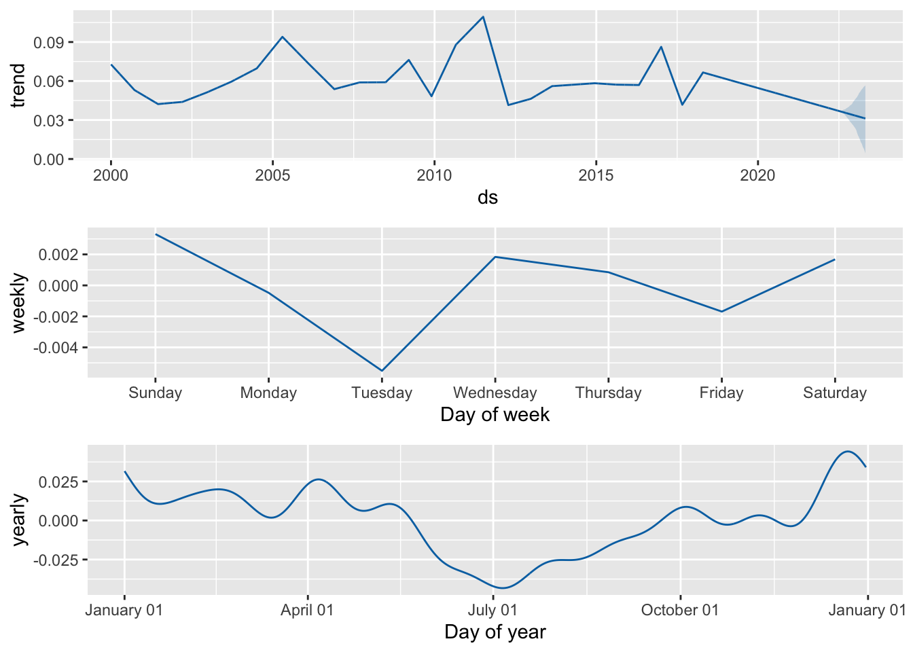

Introduction
What will the weather look like morrow? For my final project I want to build a time-series model that learns weather patterns over various regions and predicts future weather conditions in Utah County. My weather data of Utah County was collected by the National Center for Environmental Information (https://www.ncdc.noaa.gov/cdo-web/). This current data shows the amount of precipitation recorded each day from 2000-2022.
Code
Loading Packages
library(MASS)
library(forecast)
library(tidyverse)
library(prophet)
library(reshape2)Loading Data
df1 <- read.csv("./Data/Raw/2000-2009.csv")
df2 <- read.csv("./Data/Raw/2010-Present.csv")cleaning data
I selected the recorded precipitation and the date from two data sets, then combined them into one data set.
df1 <- df1 %>%
select(PRCP,DATE)
df1 <- rename(df1, ds=DATE)
df1 <- rename(df1, y=PRCP)
df2 <- df2 %>%
select(PRCP,DATE)
df2 <- rename(df2, ds=DATE)
df2 <- rename(df2, y=PRCP)
df <- rbind(df1,df2)Plot
Here is the amount of precipitation recorded over 20 years. I will work on making the x axis display the years appropriately.
ggplot(df,aes(x=ds,y=y))+
geom_line()+
labs(x="Year",
y="Recorded Precipitation")## Warning: Removed 682 row(s) containing missing values (geom_path).
Making Predictions
Using the prophet function from facebook, I can create a prediction of the weather in Utah county based on previous trends of precipitation.
m <- prophet(df)## Disabling daily seasonality. Run prophet with daily.seasonality=TRUE to override this.future <- make_future_dataframe(m, periods = 365)
forecast <- predict(m, future)Here is a plot of the previous weather with a short prediction of future precipitation.
plot(m, forecast)This graph shows what prophet has learned from the data given. It shows that there is little precipitation in the summer and more during the spring and winter.
prophet_plot_components(m, forecast)
Conclusion
Addressing my ultimate question
So far I have predicted the general trend of weather in Utah County using the prophet package. I still need to figure out how I can guess the weather tomorrow.
Things to do
I need to add more to my project; I want to display a prediction of the weather of a selected time period (specifically, show what the weather will be like tomorrow). I need to look more into the prophet function and other possible resources to get more specific predictions. I also want to work on cleaning this page up and make it look more pleasing to the eye.